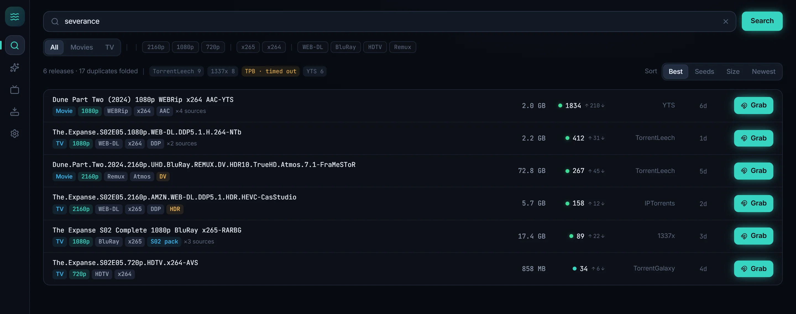
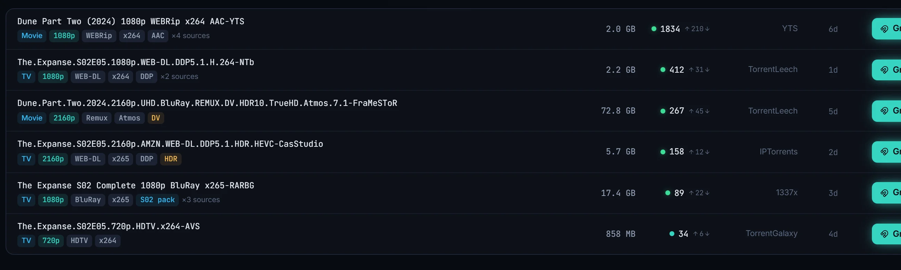
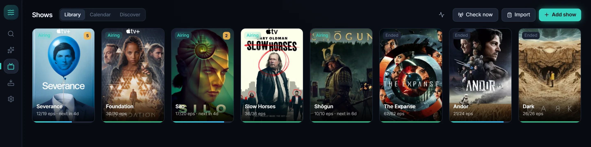
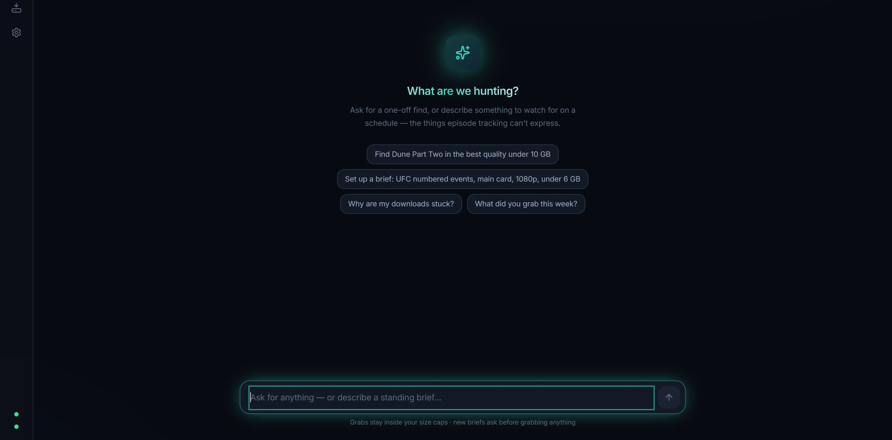
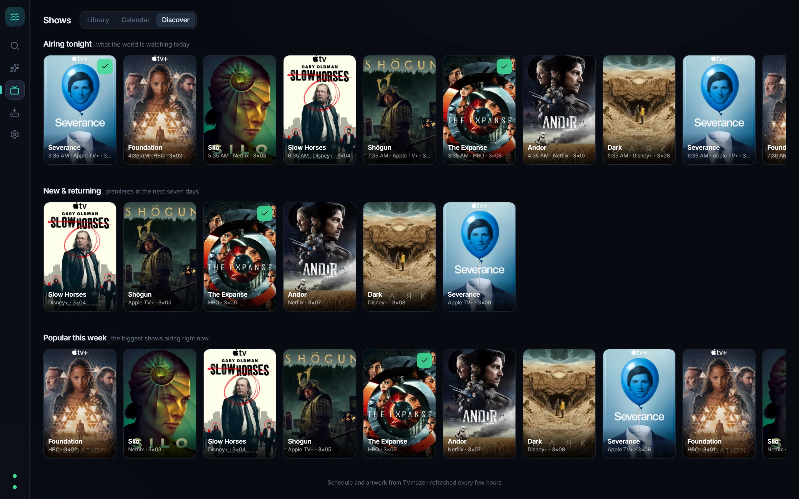

Trawler searches all your torrent indexers at once, follows the shows you love until they end, and its AI agent grabs the things episode-tracking can't even name — fight nights, race weekends, whatever you're into.

Trawler fans your search across every indexer in parallel, each on its own deadline — one slow tracker never holds your results hostage.

Pick a show and Trawler tracks every episode — backfilling the catalog, watching for new ones the day they air, and going quiet on its own when the story ends.

There is no "season 2" of UFC. Describe a standing brief in plain language — Trawler compiles it into hard rules you confirm, then hunts on a schedule using your own local AI models.

See what the world is watching, follow it in two clicks, and watch your month fill in — every followed show on a calendar that syncs to your real one.

Grab counts, gigabytes, searches and disk-space floors are enforced in Rust — not by asking the model nicely.
New briefs start in propose mode. The agent earns auto-grab per brief, and only from you.
No delete tools exist. Indexer text is treated as data, never instructions. Grabs only from live search results.
Every action lands in the activity feed with who did it and why — chat, brief, scheduler or medic.
The full rail list — provenance-pinned grabs, semantic dedupe, circuit breakers, rate limits — is in the README.
Paste show names, an IMDb list URL or its CSV export. Matched, disambiguated, size-estimated — reviewed by you before anything downloads.
"Best available" to "Space saver" — one click sets resolutions, codec taste and size caps. Per show, if you like.
Discord and Telegram pings for grabs, finished downloads and proposals. Rate-capped — your phone survives.
Dead swarms get detected, paused and swapped for a live release of the same content. Nothing is ever deleted.
Opt-in weekly pass that finds better copies of recent downloads. Proposes only — and remembers your "no".
Installs and wires up Prowlarr and qBittorrent for you. Zero to hunting in minutes.
Signed releases, verified before install, delivered from a quiet card in the corner of the app.
Close the window; the scheduler keeps hunting from the tray. Starts with Windows if you want it to.
Trawler owns none of the fragile parts. Indexer definitions stay community-maintained in Prowlarr, metadata comes from TVmaze, downloading is qBittorrent's job — Trawler is the brain and the face.
SmartScreen may ask once — More info → Run anyway (updater-signed; no Authenticode certificate yet). After that Trawler keeps itself up to date. Pairs with Prowlarr and qBittorrent; the first-run wizard can set up both.
Free and open source, MIT-licensed. Bring your Prowlarr, your qBittorrent, and optionally an Ollama box for the agent.